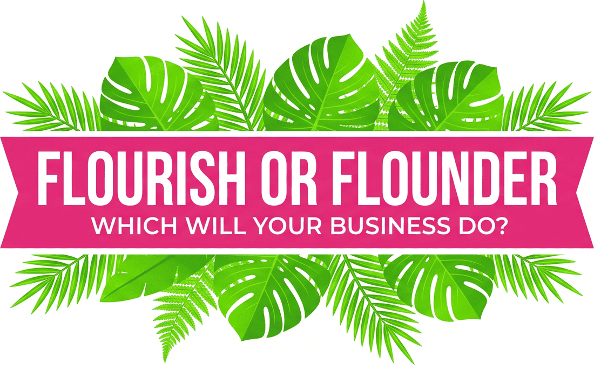

Cash flow clarity
Understand where the money actually goes, which channels earn their keep, and what your numbers are telling you before your bank balance does.

Straight-talking advice for founders who want to actually understand their numbers — and what they should do next.
Most finance advice for founders is either too basic to be useful, or so full of jargon it might as well be a foreign language.
I've spent 20 years as a CFO — through start-up, high growth, acquisitions, an AIM flotation, and exits — mostly in e-commerce and retail businesses just like yours. I know what it's like to grow fast and still stare at the bank balance wondering where the money went.
Now I work with founder-led businesses to build genuine cash flow clarity, stronger financial foundations, and — when the time comes — a business that's actually ready to sell.
Just the numbers, explained properly, and a plan you can act on.
If any of that sounds familiar — reach out.
Being a founder can be tough. Why not have someone who's done it before alongside you — whether that's rapid growth, fundraising, systems improvements, or selling a business?
Cash flow and exit-readiness are where most people find me, but 20 years across start-up, high growth, acquisitions, an AIM flotation and multiple exits means the list is longer than that. I've raised debt and equity funding, negotiated acquisitions and disposals on both sides of the table, built stock forecasting and logistics systems from scratch, cut costs, restructured teams, and sat on boards navigating everything from rebrands to shareholder disputes.
If your problem is "we're growing but something feels off and I can't quite name it," that's usually exactly the kind of mess I'm most useful in. Multi-currency, multi-channel, multi-warehouse complexity is where I've spent most of my career — so if your finances have outgrown a single neat spreadsheet, that's familiar territory, not a special case.
Understand where the money actually goes, which channels earn their keep, and what your numbers are telling you before your bank balance does.
Getting a founder-led business into the shape a buyer or investor expects — long before you start the conversation.
Debt and equity raises, acquisitions and disposals, due diligence — negotiated from both sides of the table.
Non-executive and board advisory roles for founder-led businesses, plus mentoring for founders and finance teams.
Most advisers have either done the operator job or the advisory job — rarely both, and rarely across the full lifecycle of a business.
I've been the CFO in the room during 200%+ growth, the one steering a flotation, the one restructuring a business that was struggling, and the one on the other side of the table doing due diligence on an acquisition. That means I'm not guessing what a buyer, investor, or board will actually care about — I've been all three.
People I've worked with talk about being "comfortable in both the detail and the strategic input," about learning to run their own numbers without needing me anymore, and about a CFO who genuinely cares rather than one who's just billing hours.
If you want someone who'll hand you a report, there are plenty of options. If you want someone who'll make sure you actually understand what's happening in your business — and can hold your own in that boardroom conversation without me in the room — that's the bit I think I do differently.
20+ years as a CFO across e-commerce, retail, and multi-channel businesses, an ICAEW Fellow, and someone who's sat on both sides of the table in acquisitions, disposals, and a stock market flotation.
I currently work as Board Advisor, Non-Executive Director or Fractional CFO across a small portfolio of founder-led businesses, and I mentor founders and finance teams on behalf of investors.
I'll walk you through your own numbers with a whiteboard, a napkin, whatever's to hand — until it actually clicks, not just until you've nodded politely enough times that I move on.
I ask a lot of "why" questions, because half the time the real problem isn't the number itself — it's the decision hiding behind it.
Expect direct, honest input rather than avoiding the awkward stuff. I'll tell you when something's a genuine problem and when it's fine to leave alone — and I'd rather have that conversation early and informally than let it become a crisis you find out about from your bank balance.
Comfortable in both the detail and the strategic input — she could go from the ledger to the boardroom without missing a beat.
She taught us to run our own numbers, to the point we didn't need her in the room anymore. That's a rare thing in an adviser.
A CFO who genuinely cares rather than one who's just billing hours. She told us the awkward things early, and we were better for it.
These three quotes are placeholders drawn from your own copy — swap them for real LinkedIn recommendations, then delete this note.
If something in your business feels off and you can't quite name it, that's a good enough reason to get in touch. No pitch, no 40-page report. Just a conversation.